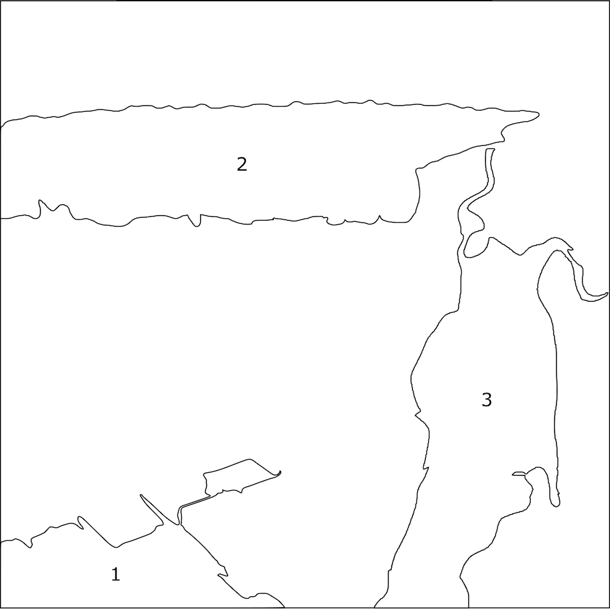
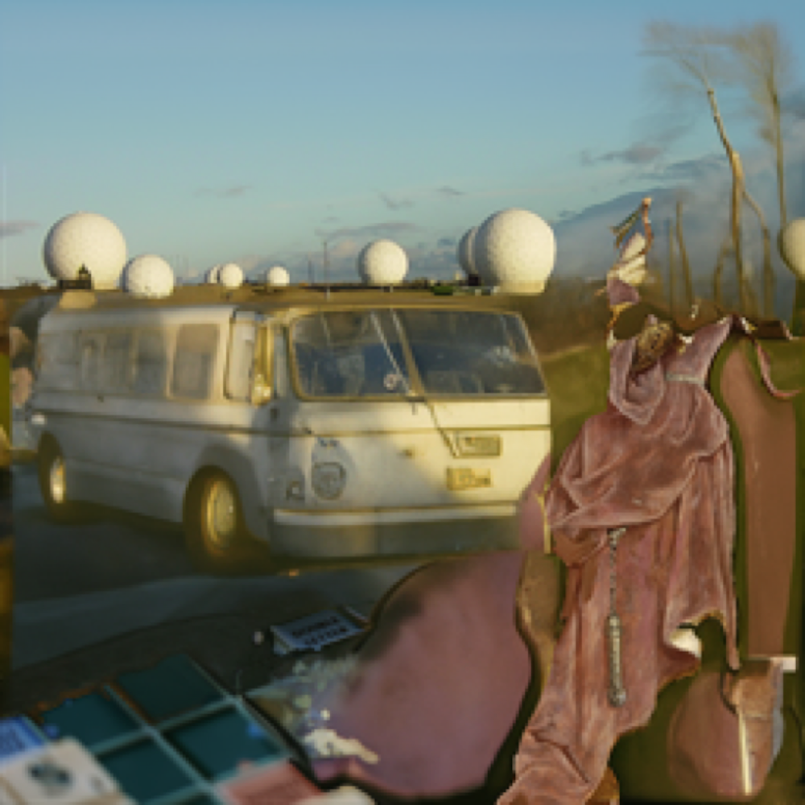
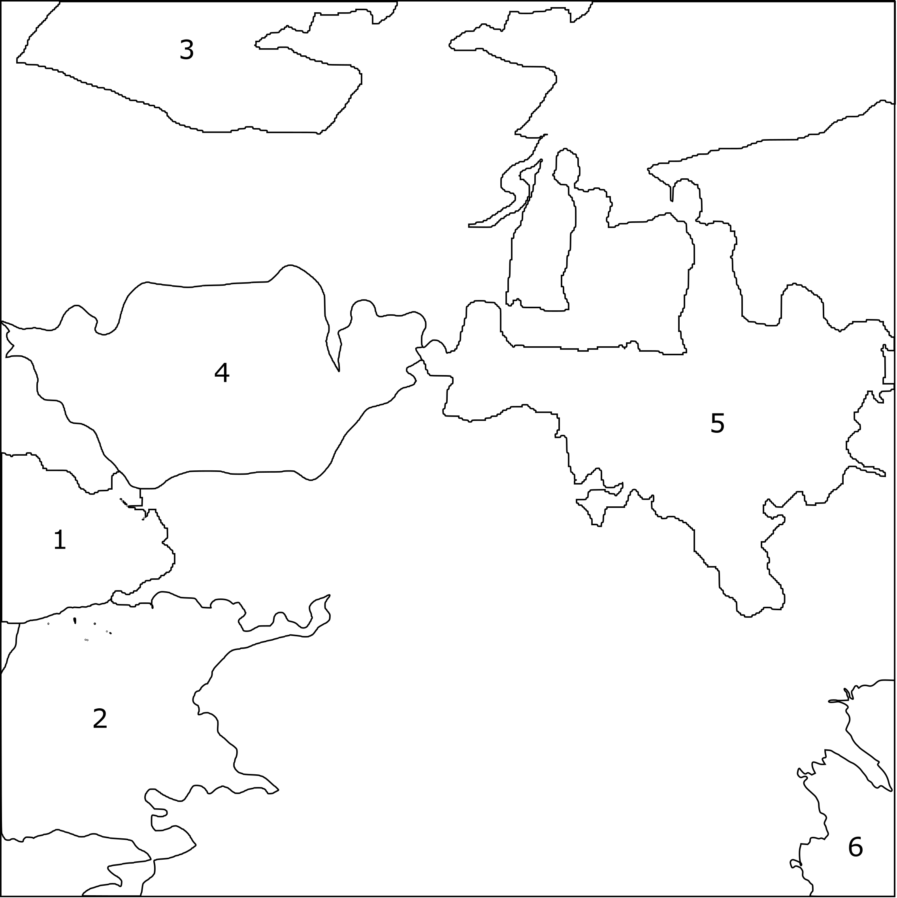
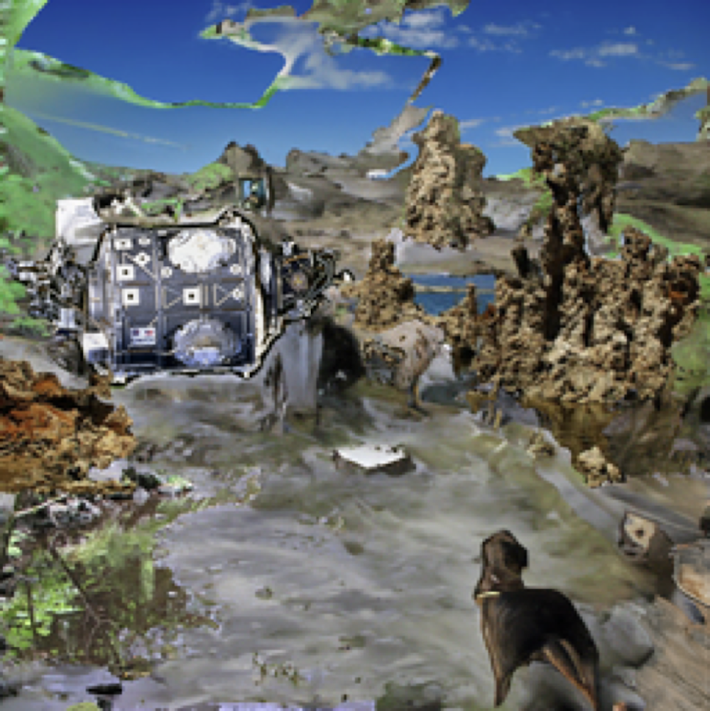
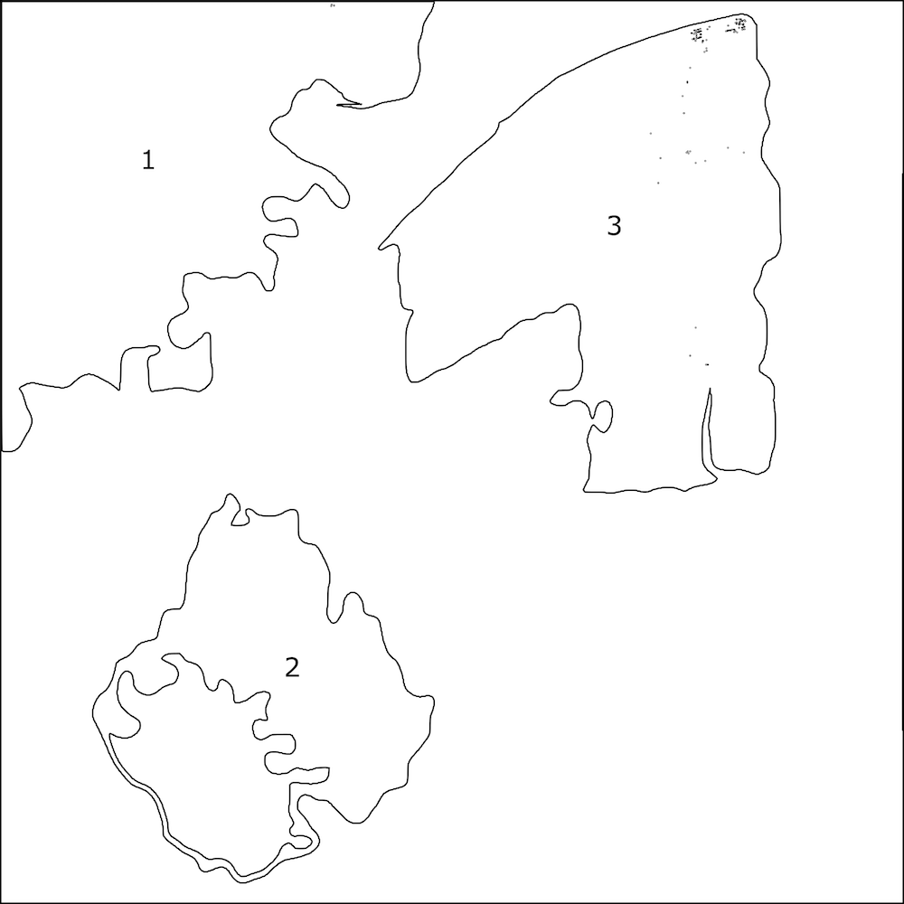
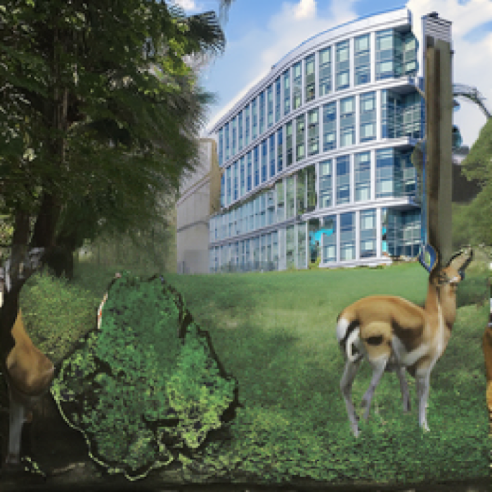
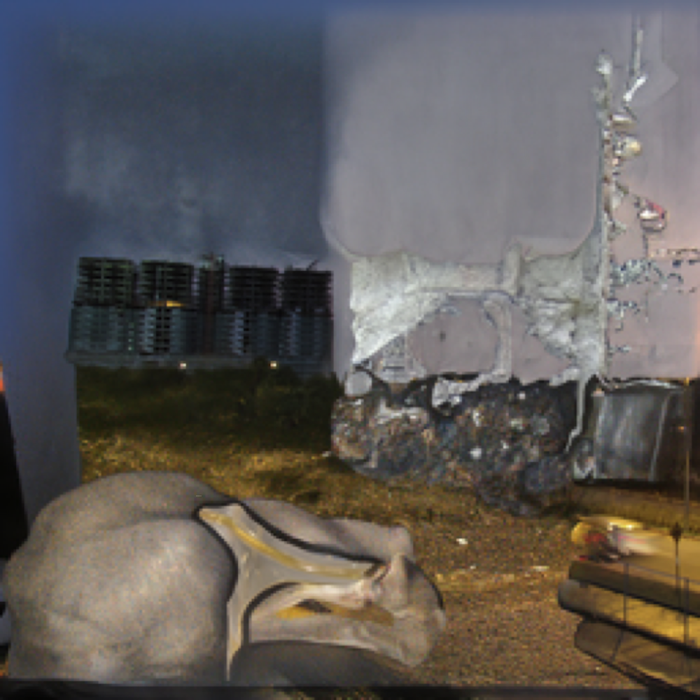

Inpainting the Archive
Inpainting is the task of filling in the missing regions of an image with content. Denoising Diffusion Probabilistic Models (DDPM) represent an emerging paradigm in generative modelling and have been shown to outperform state of the art GAN-based approaches to inpainting (Lugmayr et al., 2022). I was curious to explore how this technique could assist diffuse research workflows through ingesting fragments of conceptually linked imagery and generating novel conceptual associations. I am attracted to the idea of fragments of information, connected through archives like Wikipedia, becoming spores in culture, growing and composing new forms and possibilities.

1 - Scrabble
2 - Signal Intelligence
3 - Secrecy

Inspired by the anchors black-box model interpretability algorithm (Ribeiro et al., 2018) for visualising the contribution of regions within an image towards a machine learning model’s classification, I defined an alternative system leveraging Wikimedia’s extensive image archive that combines regions of images to generate any number of ambiguous and unclassifiable images. I'm continuing to explore the how fragments of images can be used to reinforce binary classifications whilst also acting as portals to an infinite array of new images and potential associations.

1, 2, 6 - Hot Springs
4 - International Space Station
3, 5 - Spirochaeta americana


1 - Walt Disney World
2 - Lidar
3 - DARPA


Inspiration for this system was developed over a number of evenings leading a Creative Coding meet-up at the Recurse Center in NYC.